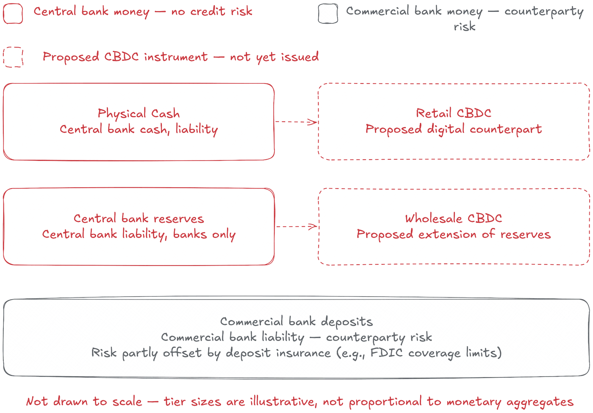
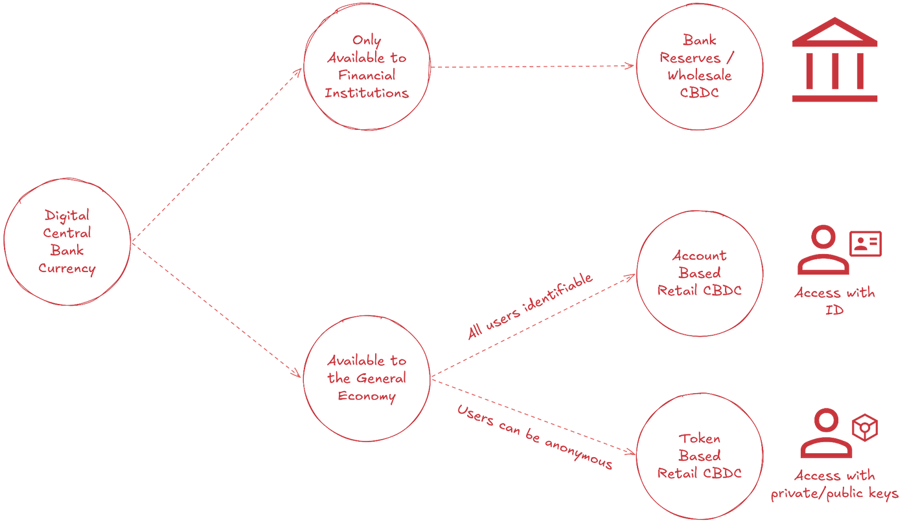

I joined the financial crime and market conduct team with an engineering background, not a banking one. The acronyms came fast — AML, CFT, KYC, LFI etc — but the one that stopped me was CBDC. Central bank digital currency. Someone used it three times in one paragraph and I realized I couldn't define any of the three words with confidence. What's "central bank money" as opposed to regular money? Is CBDC a cryptocurrency? Is it just cash with an app?
I went looking for a definition and found a pile of half-definitions instead — some confusing CBDC with stablecoins, some treating "it's digital cash" as settled fact, a few treating the whole thing as a conspiracy. So I went to the source documents and started from the bottom.
This post is the bottom layer. Before getting into how a CBDC is built (Post 2) or what it does to monetary policy (Posts 3 onward), I want to start from first principles — the smallest true statements everything else in this series rests on. Not what a CBDC is for, not what it might do — just what makes something legal tender, and what a CBDC actually is, according to the institutions building them. Everything downstream in this series assumes you've got these two straight.
Legal tender is narrower than people think
Most people use "legal tender" to mean "money I can spend anywhere." That's not what it means, and getting this wrong caused me confusion later, reading CBDC papers that treat legal tender status as a specific policy lever.
In the US, the relevant statute is 31 U.S.C. § 5103. The Federal Reserve's own explainer is direct: there's no federal law forcing a business to accept cash. A shop can decline it, unless a state law says otherwise. What the statute actually does is establish that US currency is valid payment for debts, taxes, and public charges[1]. That's narrower than "everyone must take my $20 bill."
The Bank of England's explainer adds a detail Americans don't run into: legal tender status only kicks in for a narrow situation, and even then it depends on where you are. Take a five-pound Bank of Scotland note in an Edinburgh café — real money, accepted everywhere in Scotland, backed pound-for-pound by the Bank of England, and still not legal tender anywhere in the UK, Scotland included. That's because the note isn't being used to settle a formal debt where a creditor is trying to refuse payment and sue — it's just an everyday purchase, where legal tender never enters the picture. If it did come down to settling a debt that way, the answer would depend on the nation: in England and Wales, Royal Mint coins and Bank of England notes both count. In Scotland or Northern Ireland, only Royal Mint coins do — no banknotes qualify, not even the ones printed locally. And debit cards, cheques, and contactless never enter this picture at all, anywhere, because the concept was built around physical currency and never extended further[2].
Legal tender, in practice, is a legal defense in a narrow situation: a debtor can't be sued for non-payment if they offered legal tender and the creditor refused it. It has almost nothing to do with what a business chooses to accept at the register.
This matters for CBDC because when central banks discuss giving a digital currency legal tender status, they mean this specific mechanism — not a mandate that merchants accept it.

What a CBDC actually is
Strip the debate away and the definition is compact. The Bank for International Settlements describes CBDCs as digital money, denominated in the national unit of account, that represents a direct liability of the central bank[3]. The IMF's framing matches: CBDC is digital money issued by central banks, in two forms — a digital version of cash, or a digital version of the reserves banks already hold at the central bank[4].
"Direct liability of the central bank" is the phrase worth sitting with — it's why CBDC gets treated as a distinct category rather than another payment app. Cash is a claim on the central bank itself, with essentially zero credit risk. Money in a bank account is a claim on a commercial bank, a different proposition. Cards, apps, and bank transfers all move commercial bank money around. A CBDC would be the first widely available digital instrument moving central bank money directly.
That's also where confusion with crypto and stablecoins comes from. Worth being precise: neither is a central bank liability. A cryptocurrency isn't a liability of anyone. A stablecoin is a liability of a private issuer, backed (in theory) by reserves that issuer holds. A CBDC is a liability of the state's monetary authority.
The BIS draws a further distinction that matters for design: CBDC can be built for financial institutions only — wholesale — or for the general public — retail[3]. Wholesale is close to an upgrade of the reserve accounts banks already hold; it stays invisible to most people. Retail is the version that would show up in a consumer wallet, and it's what draws most of the policy debate.

Where things stand
This isn't hypothetical. As of late October 2025, the ECB confirmed it's moving into the next phase of the digital euro project, having wrapped preparation that started in November 2023. If the relevant EU legislation passes in 2026, a pilot could start in 2027, with issuance targeted for 2029[5]. The IMF's 2023 paper notes most central banks globally are doing some form of CBDC work, with the Bahamas, Jamaica, and Nigeria already running live retail CBDCs[4].
This is mainstream central banking work, at different speeds, for different reasons — not a fringe idea from a handful of institutions.
Where this leaves things
There's a case for CBDC: modernizing aging payment infrastructure, offering a public option alongside private payment networks, and — per the IMF — preserving a role for central bank money as cash use declines[4]. There's a case for caution too: financial surveillance risk, the possibility of central banks disintermediating commercial banks, and whether the problem CBDC solves needs solving everywhere it's being built.
Posts 3 through 5 take each of these arguments further, with their own sourcing. For now, the useful thing is having those first principles straight — legal tender as a narrow legal mechanism, CBDC as a direct central bank liability, wholesale and retail as different tools solving different problems.
Next: how these things get built — account-based versus token-based, ledger architectures, and why "retail versus wholesale" from this post is just the surface. If you learned something new here, so did I, writing it — that's the whole premise of this series.
Sources
- [1]Board of Governors of the Federal Reserve System — "Is it legal for a business in the United States to refuse cash as a form of payment?" federalreserve.gov/faqs/currency_12772.htm
- [2]Bank of England — "What is legal tender?" bankofengland.co.uk/explainers/what-is-legal-tender
- [3]Bank for International Settlements — BIS Annual Economic Report 2021, Chapter III. bis.org/publ/arpdf/ar2021e3.pdf
- [4]International Monetary Fund — "Central Bank Digital Currency—Initial Considerations," IMF Policy Paper No. 2023/048. imf.org — PPEA2023048
- [5]European Central Bank — "Eurosystem moving to next phase of digital euro project," 30 October 2025. ecb.europa.eu — 30 Oct 2025 press release